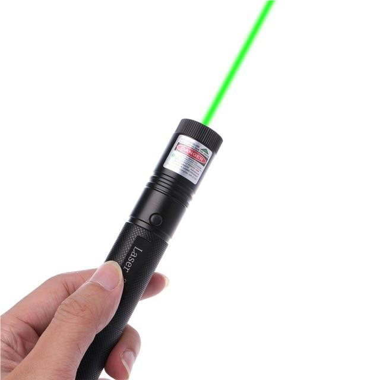
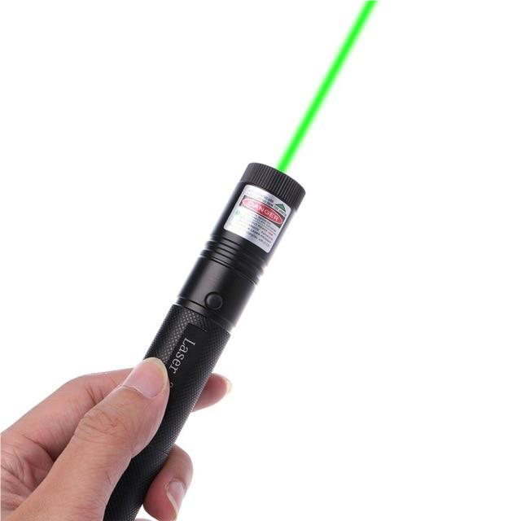

Guidebook for Prefects - Rules And Regulations
Rules
Peraturan Pakaian Seragam
Peraturan Menanggalkan Blazer
Selepas masuk ke dalam perpustakaan, blazer mesti ditanggalkan, dilipat dengan baik dan disimpan di kaunter. Aset laintidak boleh ditanggalkan.
Apabila Hari Hujan
Pengawas yang berjalan kaki ke sekolah atau balik rumah dibenarkan simpan blazer atau menanggalkan blazer di tempat tertutup dengan cara yang betul simpan di dalam beg namun aset yang lain masih perlu dipakai.
Tugasan Khas
Pengawas hanya boleh menanggalkan blazer di tempat terbuka dengan kebenaran yang diberi oleh Ketua Pengawas.
Contoh:Aktiviti mengatur kerusi di dewan
Semasa Waktu Persekolahan
Pengawas dibenarkan menanggalkan blazer dengan syaratnya semasa pengawas berada di dalam kelas, menjalankan tugasan pembersihan kelas harian dan berjumpa dengan guru di luar kelas sahaja.
Peraturan Memakai Blazer
Blazer dan aset-aset lain mesti dipakai sekiranya PAKAIAN SERAGAM SEKOLAH dipakai.
Tag nama hitam pengawas tidak boleh tersembunyi di belakang kolar blazer.
Semasa sesi Pengajaran dan Pembelajaran sedang dijalankan, pengawas dibenarkan untuk memakai atau menanggalkan blazer semasa duduk dengan syaratnya kaki tidak boleh bergerak.
Sentiasa menghormati blazer.
Contoh:Jangan bermain dengan kawan semasa memakai blazer.
Jangan main dengan kawan semasa memakai blazer
Sentiasa memastikan kekemasan blazer dijaga.
Blazer pengawas tidak boleh dipinjam kepada kawan atau pelajar lain.
Kocek blazer TIDAK dibenarkan menyimpan apa-apa walaupun barang yang berkaitan dengan Lembaga Pengawas.
Semasa memakai blazer
Pengawas tidak boleh menggerakkan kaki semasa memakai blazer.
Pastikan tag nama hitam sentiasa berada di atas garisan kocek blazer.
Pastikan blazer berada dalam keadaan baik dan sentiasa dibutangkan semasa dipakai.
Lengan blazer tidak boleh dilipat atau digulung.
Kocek blazer harus dalam keadaan baik.
Selepas memakai blazer, pengawas mesti mengemaskan blazer, memastikan tag nama hitam atau kocek tidak tersembunyi.
Semasa menanggalkan blazer
Pengawas tidak boleh menggerakkan kaki semasa menanggalkan blazer.
Jangan biarkan blazer tersentuh lantai apabila ditanggalkan.
Pastikan blazer dilipatkan dengan cara yang betul.
Pastikan tag nama hitam sentiasa ditunjukkan.
Tali Leher
Selagi seseorang pengawas memakai tali leher Lembaga Pengawas, pengawas tersebut:
Tidak boleh bercakap kasar.
Tidak boleh melawan atau memukul guru.
Tidak boleh melanggar peraturan sekolah.
Tidak boleh bermain dalam sebarang aktiviti sukan.
Tidak boleh menggunakan atau membawa barang larangan.
Tidak boleh memotong kuku di dalam kelas.
Tali leher pengawas tidak boleh dipinjam kepada pelajar lain atau kawan untuk dipakai.
Tidak boleh meletakan tali leher di atas bahu.
Sentiasa memastikan penyepit tali leher yang tidak senonoh tidak digunakan .
Pen,Buku Notak dan Pemotong Kuku
Pengawas harus mempunyai pen yang dapat berfungsi.(Jika tidak ada,hukuman akan diberi)
Jangan tulis sebarang tulisan di dalam buku nota kecuali kesalahan pelajar sahaja.
Jika buku nota pengawas sudah nipis,(kurang daripada 3 keping)sila gantikan dengan buku nota yang baru secepat mungkin.
Sila balutkan pisau kecil atau pengisar pemotong kuku.
Pengawas tidak boleh menanggalkan aset pengawas selagi masih berpakaian seragam.
Tali pinggang mesti berwarna gelap.
Stoking mesti berwarna putih dan mesti memakai kasut sekolah putih.
Pakaian Kemas Lembaga Pengawas
Baju T-shirt Lembaga Pengawas mengikut sesi tersebut.Sekiranya belum dapat,pengawas boleh memakai kameja T sekolah.
Seluar panjang mesti dipakai dan jeans tidak dibenarkan.
Stoking dan kasut.
Pen dan buku nota mesti dibawa.
Pakaian Kemas
Baju dengan kolar, seluar panjang ( Jeans tidak dibenarkan )
Stoking dan kasut.
Pen dan buku nota mesti dibawa.
Pakaian Biasa
Ikut aktiviti, memakai pakaian yang sesuai untuk aktiviti yang berkaitan
Pemakaian pengawas Puteri perlu mematuhi peraturan kelab puteri.
Pakaian Formal
Pengawas Putera memakai pakaian formal dengan tali leher yang sesuai
Pemakaian pengawas Puteri perlu mematuhi peraturan kelab puteri.
Peraturan Semasa Bertugas
Peraturan sebelum betugas
Pastikan anda jelas dengan semua keadaan tugasan dan cara bertugas di tempat tugasan anda sebelum bertugas.
Sentiasa menepati masa untuk sampai di tempat tugasan dan pastikan anda tidak lewat tugas dan kumpul.
Bersalam ataupun mengangguk kepala sebagai tanda sopan apabila berjumpa dengan pengawas, konsul-konsul atau guru.
Tangan harus disimpan di belakang dengan cara yang betul.
Pastikan anda tidak tersilap dengan tempat tugasan anda.
Pastikan anda sentiasa beraset lengkap di badan anda. Antaranya:
Pen yang dapat berfungsi.
Buku nota yang mempunyai muka surat yang mencukupi.
Pemotong kuku yang dibalut dengan baik.
Blazer yang dipakai dengan kemas.
Tag nama hitam pengawas dipakai pada blazer. (rambut dan kuku pengawas mesti kemas, sentiasa memeriksa agar tidak melanggar peraturan-peraturan Lembaga.)
Tali leher mesti sentiasa ketat dan kemas.
Tidak boleh makan dan membeli makanan sebelum dan selepas waktu rehat.
7. Pengawas yang bertugas hanya diizinkan keluar dari kelas 5 minit lebih awal sebelum waktu rehat dan tidak dibenarkan untuk membeli makanan dan makan dalam masa 5 minit tersebut.
Peraturan semasa betugas
1.Serius semasa bertugas(TIDAK BOLEH SENYUM!!!)
Tidak bergurau-senda dengan pelajar.
Tidak boleh berbual kosong dan senyum dengan kawan atau pelajar lain.
2.Tidak boleh mengeluarkan bunyi geseran tapak kasut semasa merondar.
3.Berdiri dengan tegak
Tidak boleh goyangkan kaki semasa bertugas atau bengkokkan badan dan berdiri dengan tangan di belakang.
MESTI menangkap pelajar yang melanggar peraturan-peraturan sekolah dan jangan melepaskan mereka tanpa alasan yang munasabah.
4.Mesti membantu pengawas lain yang menghadapi masalah (Contoh:Pergaduhan)
Jangan cuba mencabar pelajar dan mengakibatkan pergaduhan.
Tidak boleh makan dan minum semasa bertugas.
Bersalam atau menganggukkan kepala apabila berjumpa dengan pengawas, konsul-konsul atau guru semasa bertugas.
Anda mesti mengutip sampah sekiranya ternampak sampah.
Apabila menahan pelajar yang melanggar peraturan sekolah, pengawas harus bercakap dengan nada yang sesuai dan sikap yang baik.
Pengawas harus bertugas sehingga konsul menunjukkan signal “OFF”. Pengawas dilarang lari dari tempat tugasan mereka sebelum signal “OFF” ditunjukkan oleh konsul.
Peraturan-peraturan Semasa Berkumpul
Setelah signal ''OFF'' ditunjukkan oleh konsul,pengawas haruslah cepatkan langkah dan berkumpul di tempat yang ditetapkan.
Pengawas tidak boleh lewat semasa berkumpul.
Tidak boleh bercakap semasa konsul pengawas sedang memberi komen dan cadangan yang sesuai.
Peraturan-peraturan selepas bertugas
Mengutipkan sampah sekiranya ternampak sampah.
Selepas diOFFkan oleh konsul semasa waktu pagi, pengawas perlu balik ke kelas dengan secepat mungkin.
Selepas diOFFkan oleh konsul pengawas semasa waktu rehat, pengawas perlulah cepatkan langkah untuk membeli makanan dan merujuki papan notis dan balik ke kelas dengan secepat mungkin.
Pengawas dilarang membeli makanan selepas loceng kedua berbunyi kecuali mendapat kebenaran daripada konsul.
Menjaga disiplin sendiri dan menjadi contoh yang baik kepada pelajar lain.
Peraturan ganti
Pengawas hanya boleh mencari ganti apabila menghadapi masalah seperti sakit atau hal-hal kecemasan.
Seseorang pengawas hanya boleh mencari ganti sebanyak 3 kali seminggu.
Jikalau pengawas terpaksa mencari ganti selama seminggu, mereka harus menulis surat kepada Timbalan Ketua Pengawas I untuk menjelaskan alasan.
Pengawas yang ingin mencari ganti mestilah memberitahu alasan kepada penggantinya. Penggantinya haruslah mengganti pengawas tersebut sekiranya alasan yang diberikan adalah munasabah.
Pengawas yang berjanji untuk mengganti mesti pergi bertugas. Jika tidak, pengawas yang mengganti tersebut akan dianggap ponteng tugas.
Pengawas yang mengganti pengawas lain haruslah melapor kepada konsul yang bertugas di tempat tugasan tersebut.
Pengawas yang mengganti pengawas lain jika melakukan kesalahan haruslah menulissurat kepada Timbalan Ketua Pengawas I dan menerima hukuman yang sepatutnya.
Peraturan Bilik Pengawas
1. Fungsi Bilik Pengawas
1.1 Pusat operasi Lembaga Pengawas
1.2 Bilik pentadbiran Lembaga Pengawas
1.3 Tempat menyimpan aset pengawas
1.4 Tempat pertanyaan am pelajar dan orang ramai
1.5 Tempat menjaga kebajikan pengawas
2. Am
2.1 Bilik Pengawas adalah terbuka kepada semua Pengawas.
2.2 Kunci Bilik Pengawas hanya boleh dipegang oleh barisan Konsul.
2.3 Pintu Bilik Pengawas hanya boleh dibuka oleh Konsul kecuali mendapat kebenaran daripada Konsul untuk membuka sendiri.
2.4 Pelajar tidak boleh memasuki Bilik Pengawas tanpa kebenaran barisan Konsul.
3. Waktu Operasi
3.1 Bilik Pengawas dibuka pada waktu pagi, rehat, dan waktu balik serta dibuka apabila diperlukan.
4. Disiplin
4.1 Pengawas dipertanggungjawab supaya sentiasa menjaga suasana Bilik Pengawas agar berada dalam keadaan tenteram dan harmoni.
4.2 Disiplin pengawas mesti sentiasa dijaga ketika berada dalam Bilik Pengawas.
5. Kebersihan Dan Kekemasan
5.1 Pengawas dinasihati supaya menjaga kebersihan Bilik Pengawas.
5.2 KASUT ATAU SELIPAR MESTI DITANGGALKAN sebelum memasuki Bilik Pengawas dan diletakkan di atas rak kasut kecuali semasa hujan lebat.
5.3 Kerusi, fail, dokumen, alat tulis dan harta benda lain mesti dikembalikan ke tempat asal selepas digunakan.
6. Barang Larangan
6.1 Barang-barang yang tidak berkaitan dengan urusan dan objektif Bilik Pengawas mesti mendapat kebenaran konsul sebelum disimpan dalam Bilik Pengawas.
7. Harta Benda
7.1 Segala harta benda dalam Bilik Pengawas mesti dijaga dengan baik. Segala kerosakan atau kehilangan hendaklah dibayar ganti rugi. Segala harta benda yang dipinjam keluar dari Bilik Pengawas mestilah dipersetujui oleh barisan konsul dahulu.
7.2 Semua dokumen dalam Bilik Pengawas adalah SULIT. Pengawas DILARANG MEMBUKA MANA-MANA LACI ATAU KABINET dalam Bilik Pengawas.
7.3 Segala FAIL dan BUKU di RAK dalam Bilik Pengawas TIDAK BOLEH DISENTUH TANPA KEBENARAN BARISAN KONSUL.
7.4 Pengawas haruslah mendapat kebenaran konsul terlebih dahulu sebelum menggunakan segala harta benda dalam Bilik Pengawas.
7.5 Keselamatan barang peribadi yang disimpan dalam Bilik Pengawas adalah di bawah tanggungjawab pemiliknya.
8. Pindaan
8.1 Barisan konsul berhak membuat sebarang pindaan ke atas peraturan Bilik Pengawas.
Kelakuan Diri Pengawas
Kelakuan diri sendiri semasa tugas
Pengawas harus sentiasa mengawal emosi diri sendiri dan tidak boleh melepaskan perasaan geram atau tidak puas hati terhadap pelajar lain.
Pengawas harus menangkap kesalahan pelajar dengan cara yang betul iaitu mengelakkan perlanggaran dengan pelajar serta tidak berkelakuan kasar terhadap mereka.
Pengawas tidak boleh memihak kepada pelajar yang telah melakukan kesalahan seperti membantu pelajar menyembunyikan barang larangan dan melepaskan pelajar yang telah melanggar peraturan sekolah.
Sebelum bertugas di sesuatu tempat tugasan, pengawas mesti memahami tugasannya. Contoh: bertanya kepada pengawas yang berpengalaman atau konsul.
Pengawas mesti menunjukkan teladan yang baik di depan pelajar lain kerana pengawas merupakan pemimpin pelajar.
Pengawas tidak boleh ponteng tugas dan lewat bertugas
Pengawas tidak boleh menggunakan signal “OFF” dengan sebarangan.
Kelakuan diri sendiri secara am
Pengawas mesti sentiasa mematuhi peraturan sekolah dan peraturan Lembaga Pengawas
Pengawas mesti mengamalkan prinsip serius semasa serius dan main semasa main.
Pengawas mesti menjaga kebersihan kawasan sekolah. Contohnya, apabila nampak sampah, pengawas perlu mengutip sampah tersebut dan membuangkannya ke dalam tong sampah.
Pengawas harus sentiasa menjaga penampilan diri. Contohnya, tidak berkuku panjang, tidak berambut panjang, rambut tidak berwarna, tidak memakai barang kemas (cincin, rantai yang bukan berunsur agama, anting-anting yang tidak dibenarkan), tidak boleh memakai cermin mata yang berwarna serta harus selitkan baju.
Pengawas mesti merujuk kepada papan notis pengawas dengan teliti pada awal pagi, waktu rehat, dan waktu balik semasa hari persekolahan.
Pengawas harus sentiasa menjaga nama baik dan imej Lembaga Pengawas serta sekolah dengan tidak melakukan perkara yang akan menjejaskan imej Lembaga Pengawas dan sekolah seperti mencuri, bercakap kasar, bergaduh, melakukan jenayah dan sebagainya.
Pengawas mesti saling membantu dalam Lembaga Pengawas. Contohnya, apabila pengawas lain menghadapi masalah,pengawas haruslah menghulurkan bantuan.
Pengawas mesti pandai menyanyikan lagu pengawas dan dapat ingat nama konsul, ikrar , visi serta misi Lembaga Pengawas.
Pengawas tidak boleh bawa barang larangan seperti telefon bimbit, “ liquid paper”, majalah hiburan, CD, VCD, DVD, Pendrive dan sebagainya.
Semasa berkomunikasi dengan guru atau konsul,pengawas harus menggunakan nada yang sesuai dan bersopan santun.
Pengawas tidak boleh lewat masuk kelas kecuali ada urusan yang berkaitan dengan Lembaga Pengawas.
Pengawas tidak dibenarkan tidur dalam kelas.
Pengawas mesti jelaskan alasan lewat masuk kelas kepada guru jika bukan urusan Lembaga Pengawas supaya tidak menjejaskan imej Lembaga Pengawas.
Hubungan BGR tidak digalakkan dalam Lembaga Pengawas.
- Semua pengawas tidak boleh melakukan perkara-perkara yang tidak senonoh seperti berikut :
i) berpegang tangan
ii) berpeluk-pelukan
i) bercium-ciuman
ii) tidak boleh meraba-raba
iii) tingkap dan pintu mesti dibuka jika berada dalam bilik
Aktiviti Lembaga Pengawas
Pengawas mesti mengutamakan aktiviti Lembaga Pengawas dengan meluangkan masa menyertai aktiviti Lembaga Pengawas yang telah dianjurkan.
Pengawas tidak boleh ponteng mesyuarat am atau perjumpaan dan aktiviti Lembaga Pengawas tanpa alasan yang munasabah dan mesti menunjukkan bukti ketidakhadiran.
Apabila berada dalam bilik mesyuarat, pengawas perlu serius dan tidak boleh bising dengan berbual kosong , tidak boleh makan, tidak boleh tidur atau bermimpi.
Pengawas mesti menepati masa apabila menghadiri mesyuarat, perjumpaan dan segala aktiviti Lembaga Pengawas.
Sebelum menghadiri mesyuarat, pengawas mesti membuat persiapan awal seperti memastikan semua aset adalah lengkap, berpakaian seragam dan memastikan penampilan diri adalah baik.
Semasa agenda disiplin dijalankan,apabila pengawas sedang menjalani hukuman, pengawas yang lain tidak boleh ketawa dan harus belajar daripada kesilapan mereka dengan tidak melakukan kesalahan yang sama.
Pengawas tidak boleh membocorkan segala perkara yang dibincangkan dalam mesyuarat kerana semua maklumat itu adalah sulit.
Perhimpunan
Sekiranya ada perhimpunan, pengawas dikehendaki berkumpul pada pukul 6.30 pagi atau mengikut masa yang ditetapkan oleh barisan konsul.Pengawas yang bertugas boleh dikecualikan.
Semasa berkumpul, pengawas harus bergerak dengan cepat dan berdiri dalam barisan serta jangan bising.
Pengawas akan dibahagikan tugas oleh Timbalan Ketua Pengawas I. Semasa berada dalam dewan, pengawas mesti memastikan semua pelajar berada dalam barisan kelas masing-masing dengan tersusun dan mengawasi keadaan dewan.
Semasa perhimpunan dijalankan, pengawas akan berdiri di belakang dewan.
Semasa menyanyikan lagu sekolah dan lagu “ Negaraku”, tangan pengawas perlu letak di sisi dan berdiri tegak.
Pengawas tidak boleh bercakap dan mesti menumpukan perhatian sepenuhnya serta tidak boleh membelakangi penceramah.
Hak & Kuasa Pengawas
Apabila terdapat pelajar cuba menghina, mencabar atau memukul pengawas, pengawas haruslah mengawal emosi sendiri dan bersikap sabar.
1. Situasi Semasa Berseorangan
Apabila pengawas telah dihina, dicabar atau dipukul oleh pelajar, pengawas boleh mencatatkan nama dan kelas pelajar tersebut untuk tindakan disiplin.
Pengawas boleh mengambil inisiatif sendiri untuk mempertahankan diri sendiri dengan tidak menghina, mencabar atau memukul balik pelajar tersebut.
Pengawas boleh membawa pelajar tersebut untuk berjumpa dengan guru-guru disiplin apabila dihina, dicabar atau dipukul oleh pelajar tersebut.
2. Situasi Semasa Terdapat Pengawas Di Kawasan Berhampiran
Apabila pengawas mendapati pergaduhan antara pengawas dan pelajar telah berlaku di kawasan berhampiran, pengawas perlu pergi menghalang pergaduhan tersebut daripada berterusan.
Pengawas perlu cuba menenangkan emosi pengawas dan pelajar yang terlibat dalam pergaduhan.
Pengawas juga perlu pergi mencari guru-guru disiplin dengan secepat mungkin untuk mengelakkan pergaduhan tersebut berterusan.
Peraturan Surat
Sekiranya pengawas melakukan kesalahan dalam tugas harian atau kesalahan lain, pengawas mesti menulis surat kepada Timbalan Ketua Pengawas I atas arahan konsul atau secara automatik.
Setiap surat mesti dihantar kepada Timbalan Ketua Pengawas I dalam tempoh 3 hari.
Hari cuti tidak dikira dalam tempoh 3 hari tersebut tetapi hari kokurikulum atau hari gantian sekolah dikira dalam tempoh 3 hari tersebut.
Jika pengawas lewat menghantar surat sehari, pengawas perlu menjalankan hukuman sebanyak 5 kali tekan tubi / sengan dengan arahan Timbalan Ketua Pengawas I.
Pengawas mesti menulis surat mengikut format surat Lembaga Pengawas dengan cara lipatan yang betul.
Bukti yang diserahkan harus dipastikan adalah betul dan tepat.
Surat kesalahan hanya boleh ditulis dengan tangan dan tidak boleh ditulis oleh pengawas lain dan juga semasa waktu p&p.
Surat hanya boleh ditulis dengan menggunakan pen biru dan hitam.
Sampul surat tidak boleh dilekatkan.
Pengawas yang melanggar peraturan surat dikehendaki menyalin semula surat tersebut berdasarkan arahan daripada Timbalan Ketua Pengawas I.
Surat meletak jawatan hanya boleh ditulis kepada Ketua Pengawas.


 
